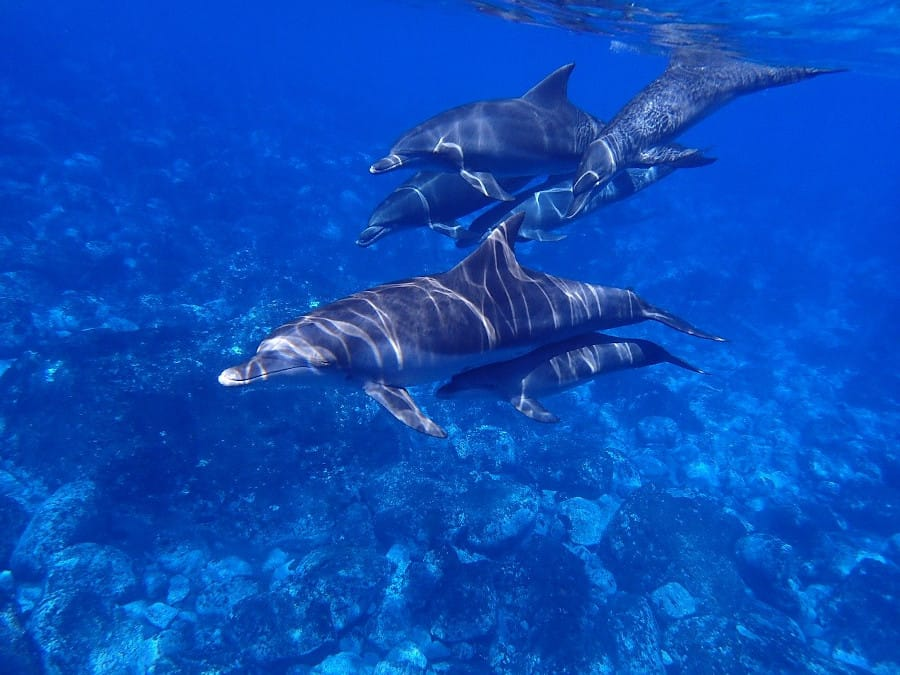
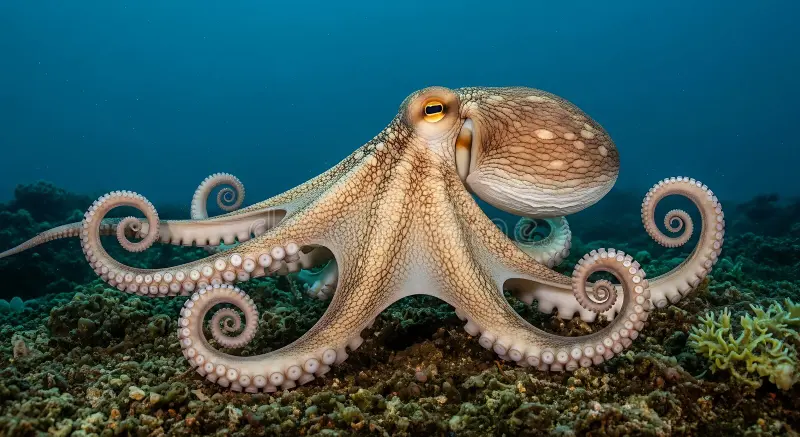
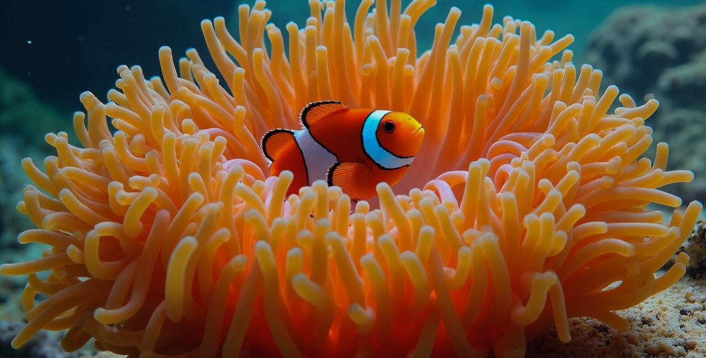
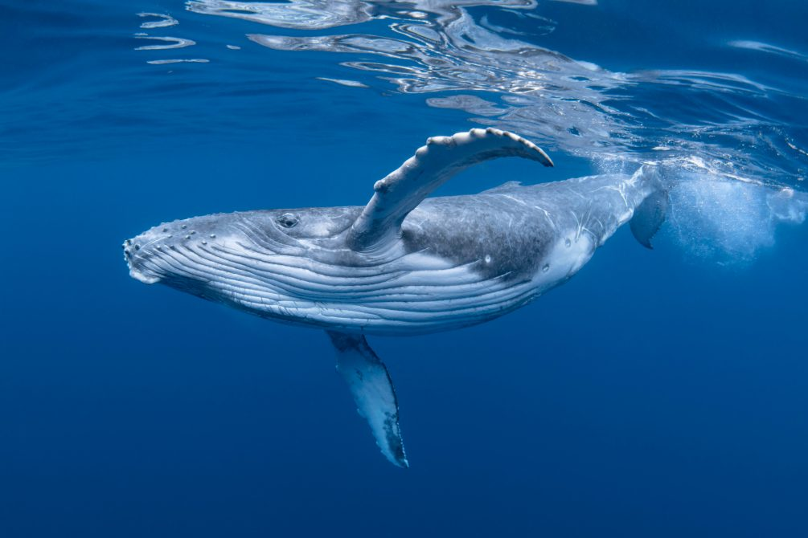
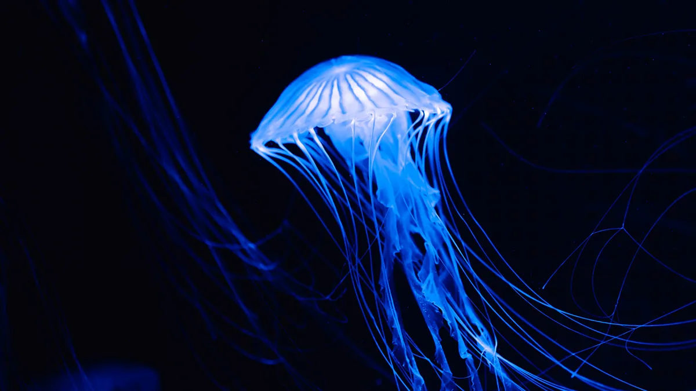
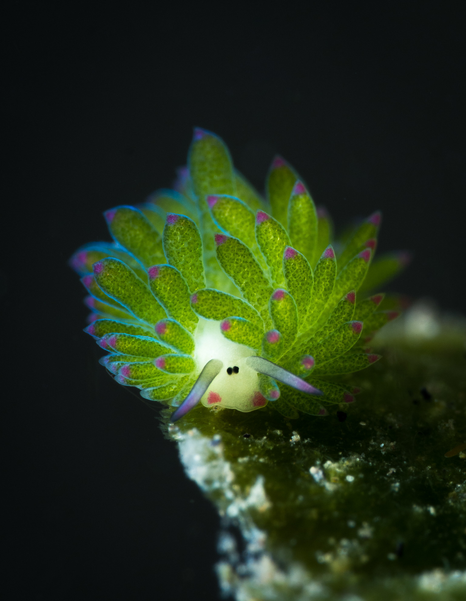

Sea Turtle
Sea turtles are marine reptiles that spend most of their lives in the ocean. They come onto beaches to lay their eggs.
Discover a few of the amazing creatures living in our oceans.
Sea turtles are marine reptiles that spend most of their lives in the ocean. They come onto beaches to lay their eggs.

Dolphins are intelligent marine mammals. They use sounds to communicate and find their way through the water.

An octopus has eight arms and can change its color and appearance to blend into its surroundings.

Clownfish live among sea anemones. Their bright orange and white colors make them easy to recognize.

Whales are marine mammals that breathe air. Some species travel long distances during their migrations.

Jellyfish have soft bodies and tentacles. They move through the water by contracting their bodies.
A SPECIAL OCEAN CREATURE
The Leaf Sheep is a tiny sea slug with green structures that look like leaves. It feeds on algae and can retain some of their chloroplasts.
Scientific name: Costasiella kuroshimae.
